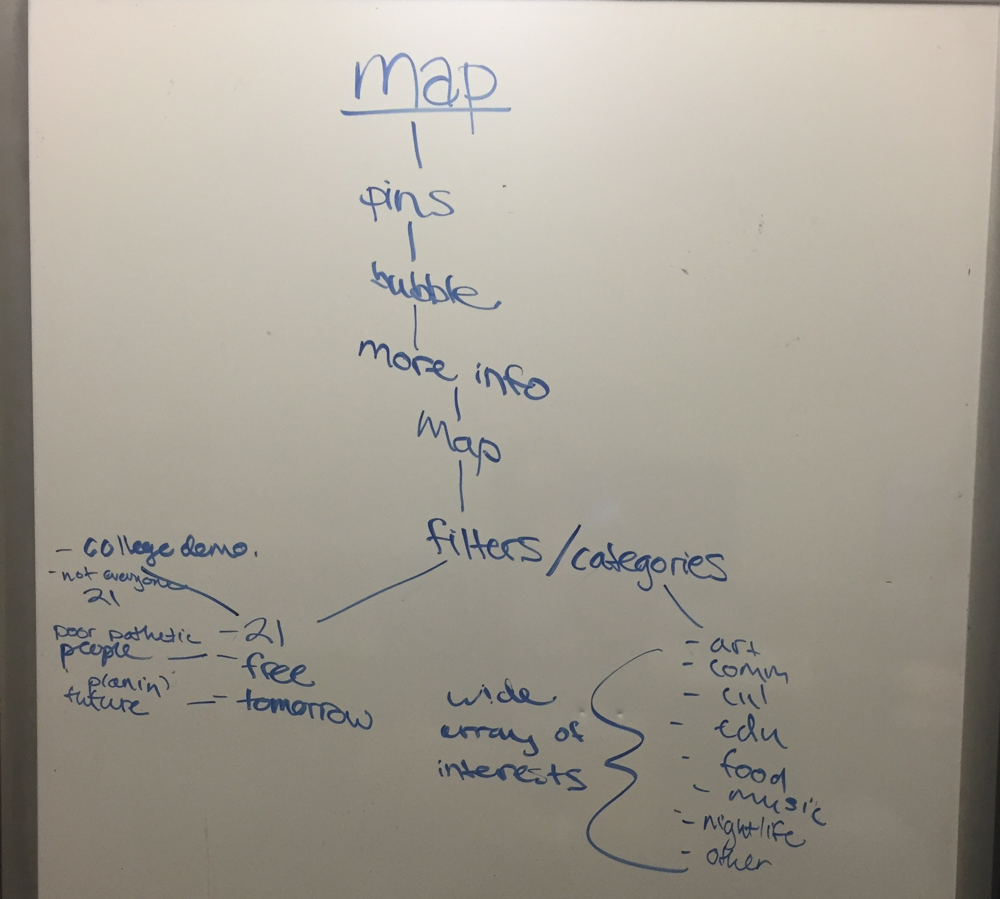

Julian Bossiere
Design Thinking (INFO 360), Autumn 2015
Introduction
This process book describes the steps my team and I took in designing a solution to an information problem for our Design Thinking class. Our problem had to fall under the theme, "Surviving College". My team and I decided to tackle the problem "University of Washington students don’t have an easy way to find events in the surrounding Seattle neighborhoods when they are outside their on-campus communities because they lack awareness of when, where, and what events are going on around them."
This website outlines the steps our team followed in order to arrive at our final design solution, with a focus on my specific contributions to the project.
I will go through the initial problem decision and solution generation processes, the difficulties we experienced as we got more detailed about the solution, and how the final design came about.

Julian Bossiere - Graphic Designer

Natasha Dietzler - Project Manager
Katrina Ezis - Technical Writer
Problem Brainstorm
Our initial problem statement
The notes for the initial problem statement
The first day we were grouped with our teammates, the in-class activity was to come up with an information problem related to the theme. This was actually one of the harder parts of the process because the problem statement would determine what kind of solution we'd design in the end. During this period, we struggled because we had a tendency to think of solutions first, and then problems that would accompany that solution.
We threw around a few ideas, not particularly liking any of them, and that's when I thought about what difficulties I've personally experienced as a college student. I remembered the difficulties of exploring the world outside of campus, especially because I am not a Seattle native. I've experienced both looking for a specific type of place or event and just looking for something spontaneous and fun to do and I always had difficulty finding exactly what I wanted. Katrina also had a similar thought, as she reflected on her experiences trying to use the RSO website to find things to do on campus. This is how we came upon the event-finding problem.
We decided that we wanted to focus on trying to help undergraduate students, especially those new to the school, get information about on-campus events.
Interviews
The next step was to conduct interviews with people who fell into our target audience in order to get a better sense of what kind of solution was needed. I felt that this step was a little constrained because we were to choose our interviewees out of the students from our class, and not everyone in our class deals with our problem.
My teammates and I came up with a set of interview questions, including ones such as, "Have you been to campus-related events, and what was the process of finding these events like?", and "Did the way you find out about events change as you grew accustomed to college life?"
The feedback we got was extremely insightful because it made us realize that many students were not as interested in looking for on-campus events as we'd thought, and that their interests were more off-campus. This was the first pivot point in our design process, and after discussing the results of our individual interviews, we decided to change our focus to off-campus events.
Idea Generation
Coming into the ideation stage, I already had a mental image for what the solution could be - a simple website. But we were told not to get attatched to an idea, and to be prepared to discard ideas because the first few we have most likely won't be the final design.
Ideas generated in class in 30 minutes
A small sample of my 40 ideas done at home
We were given the task of sketching out and describing 40 solution ideas - some wild, some not - per team member. The idea was that in a creative process, like design, quantity can yield quality. During class, we did a little bit of time-constrained idea generation. However, thinking of 40 unique ideas was actually much more difficult than expected. Part of it might've been that coming into the process with an idea for a website limited my imagination a little bit, but I did my best to break out of that mold.
Low-Fidelity Prototypes 1
I met again with my teammates to discuss which ideas we thought were the top 3 solutions out of our total 120 ideas. We settled on "Eventfill", a website that will let the user browse event categories and add them to their schedule, "Eventfill Calendar" a web-based calendar that allows the user to view their events and populates their calendar with their friend’s events, and "One Event Away", a mobile application that allows users to spontaneously find events, even last minute, in their immediate area. From these, we each sketched a low-fidelity prototype in order to map out, and get a better idea of what these solutions would do. I was in charge of sketching the calendar web app.
Eventfill Prototype
One Event Away Prototype
Eventfill Calendar Prototype
At this point, I was leaning away from One Event Away the most because it felt the most distant from the website idea I had when we came up with the problem. Looking back now, I realize that I'd grown somewhat more attached to the Eventfill idea because of it's similarlity to the centralized event website I was imagining.
Usability Tests
We finally wittled it down to our top three choices, and now had a chance to do some usability testing to see what potential users thought were useful and not about each of our three prototypes. I'm glad we did the usability tests because that's what broke my bias towards Eventfill the most.
After each of my testers told me what they thought were positive, negative, and could be improved for each design, I asked them what they thought would be the most useful to them. Although my two testers gave slightly conflicting views, when my teammates and I brought all six of our results together, it was clear the the majority of testers found One Event Away to be the most useful.
Our focus turned to One Event Away and we began work on improving it according to suggestions from our usability tests as well as our own design intuitions. First big change: the name. We wanted something more fun, and that's how "pinpoint" came about.
Low Fidelity Protoype 2
With the feedback from the usabilitiy tests in our hands, it was time to make an improved low fideilty prototype. This was one step closer to being what we truly wanted it to look like.
Events Near You (List View)
Two major changes we made for the second version of this "pinpoint" prototype was adding color to the pins so that users could easily identify which events were happening around what time, like a heatmap, and getting rid of the menu bar at the bottom. As our design became more clear and specific, we ran into a bit of a problem.
Difficulties
Towards the beginning of this design process, we were told that our idea would most likely change around multiple times, but we weren't told that we may have to change our problem statement! We were clear about how "pinpoint" would function, but we weren't satisfied with our problem statment. We got feedback on it and realized it wasn't precise enough, so we had to have a meeting to get our problem statement to a more satisfactory state.
We understood that normally, the solution would be changed in order to fit the problem, but because it seemed many people liked the idea of a more spontaneous event finder, like "pinpoint", we knew that our problem statement must be slightly off.
"After students at UW know what campus has to offer, they feel uncertain how to make the transition to off campus events. Our target audience is juniors and seniors who have a set community. Students want to expand their community off campus, and there is no easy, centralized way to find events that are suitable to our age demographic."
Who knew that the wording for a simple problem statement could be so difficult? We spent quite a bit of time looking at each key word in the statment in order to figure out if it conveyed what we truly wanted the problem statement to say. After much debate, we finally had a satisfying, succinct statement.
"Students don't have an easy way to find events to go to when they're outside their on-campus communities."
High Fidelity Protoype

A map for the map screen for our application
Natasha and I, working on the high fidelity prototype (taken by Katrina)
Finally, we were coming down to the final stages of our design. As a team we created a basic map of how our app would function and what the various screens and menus would be. Then we switched from pen and paper to the computer for the high fidelity prototype. No one on the team had graphic design skills, but we were lucky to find lucidchart, a website that allowed us to do drag-and-drop design. I was able to pick up the skills to use lucidchart adeptly faster than my teammates, so at a certain point, I became the head graphic designer. We all worked on the main parts of the design together, but the finer details, and any add-ons we decided to do later were up to me to add to the prototypes.
At last our high fidelity prototypes had all the detail we wanted to pack into our app. Our first low fidelity prototype had only three screens for the whole app, but by the end of the high fidelity prototype design, we had six screens with unique functions.
Events Near You (List View)

Bookmarks
Conclusion
From the very first step until the last little details, the design process that led to "pinpoint" was a time consuming, and challenging one for me and the rest of my team, especially as first-time designers. I didn't realize that designing something as simple as an event-finding application could include so many steps and details to ensure that the final design is one that satisfies the problem. From deciding the problem we wanted to solve, to coming up with over 100 designs, to the interviews and user tests, to the unexpected bumps along the way, and finally, to our finished prototype, it's been a long journey, but one I'm glad to have completed.
There are two big things I will take away (and will definitely use in the future) from this process. The first is when looking for an information problem to solve, to avoid thinking about the solution I want to implement before having a well-defined problem. Being too focused on a cool solution in the first step on the way to "pinpoint" led to some difficulties in creating the design later along the road. The second is the importance of having a very clear, succinct problem statement, without which designing a solution is much more difficult. Because it was our first time going through the full design process, the whole team didn't realize that our problem was quite broad until fairly late. We also didn't have a very clear understanding of what exactly makes a problem statement more succinct, and as a result I think we struggled with trying to define ours. However, I know that thanks to this experience, the next time I go through the process will be that much better.
I'm proud of the work I've done on the design personally, as well as the work we've put in as a team, and of course, of the final design itself. I've realized that design is not as easy, but I'm looking forward to my future experiences in design.